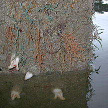
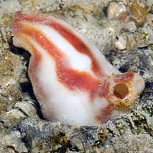
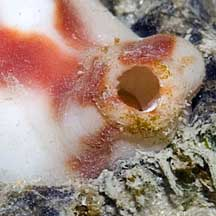
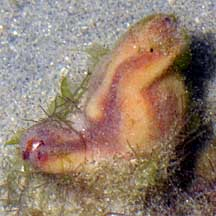
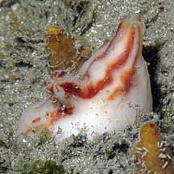
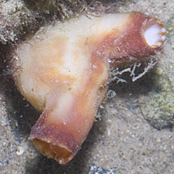

|
|
| ascidians text index | photo index |
| Phylum Chordata | Subphylum Tunicata/Urochordata | Class Ascidiacea |
| Thumbs-up
sea squirt Polycarpa sp.* Family Styelidae updated Feb 2020 Where seen? This blob with red stripes is commonly seen our Northern shores. Like a small disembodied thumbs-up, this animal is usually stuck to a large boulder, jetty pillings and other hard surfaces, near the mid-water mark. Usually seen alone or in groups of a few individuals. Features: 3-5cm long, made up of two 'fingers', one shorter and at right angles to the longer larger 'finger'. Usually white with orange or red irregular broad stripes. It is a solitary (not colonial) ascidian. It appears sad and flaccid when exposed out of water, but is usually well rounded when submerged. It has bands of muscles along its body. When these muscles constrict, water squirts out. That's why it is called a sea squirt. It does this when disturbed, or to get rid of wastes. |
|
 They settle near the low water mark at the base of rocks. Changi, Jun 02 |
 Tuas, Dec 03 |
 |
*Species are difficult to positively identify without dissection and examination of internal parts.
On this website, they are grouped by external features for convenience of display .
| Thumbs-up sea squirts on Singapore shores |
On wildsingapore
flickr
|
| Other sightings on Singapore shores |
 Tanah Merah, Oct 09 |
 Chek Jawa, Jul 03 |
 Tanah Merah, Jul 11 |
Links
|